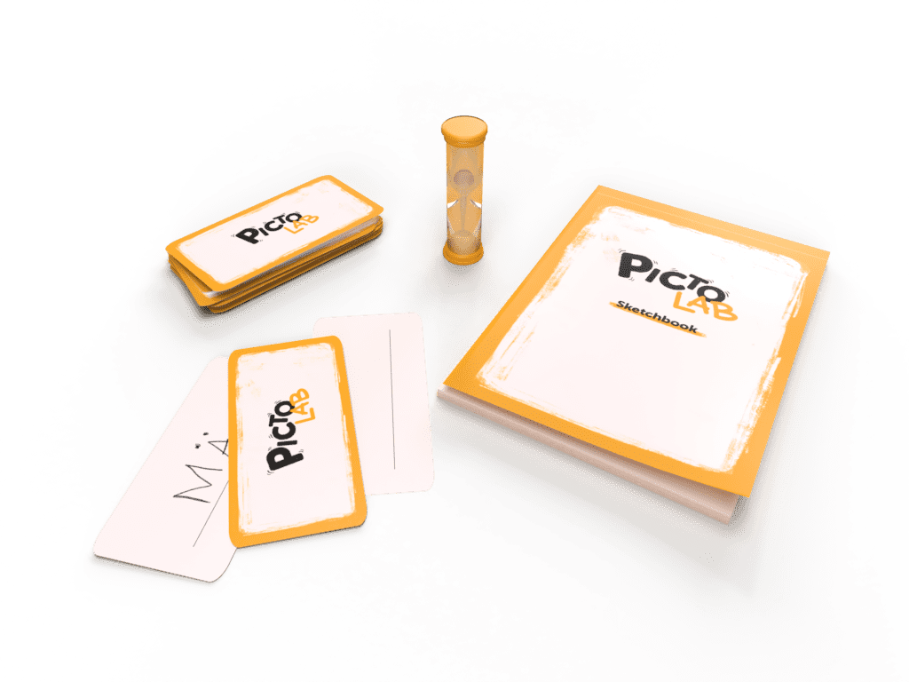
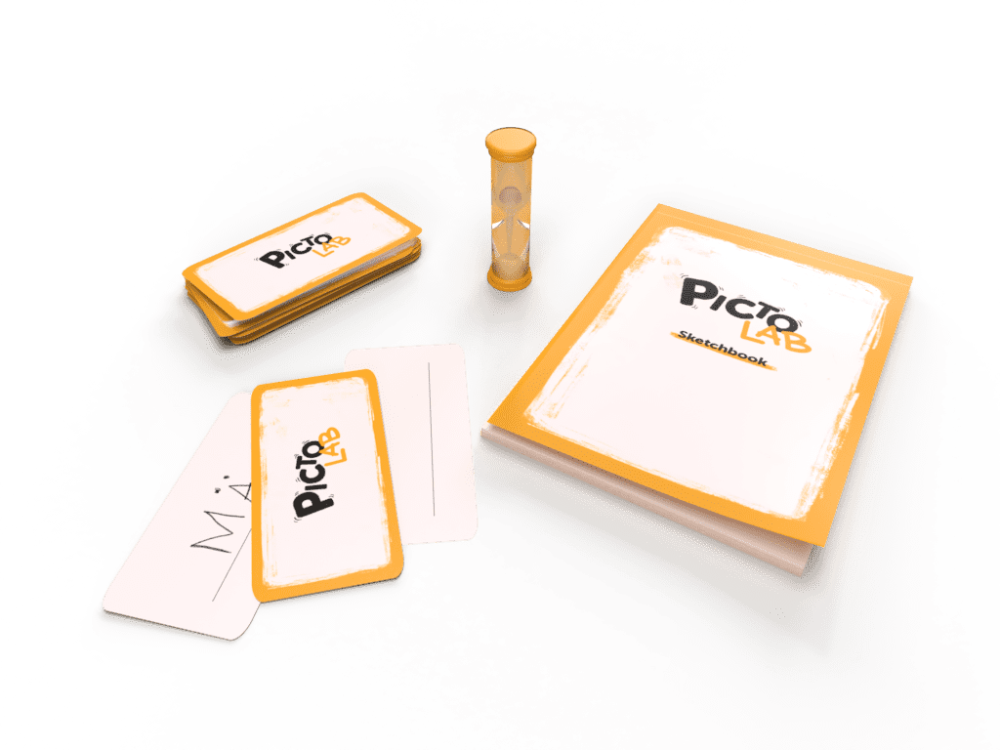
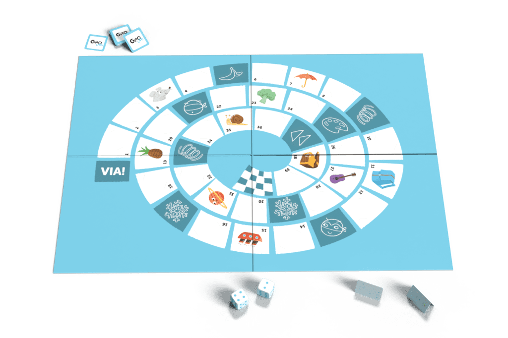
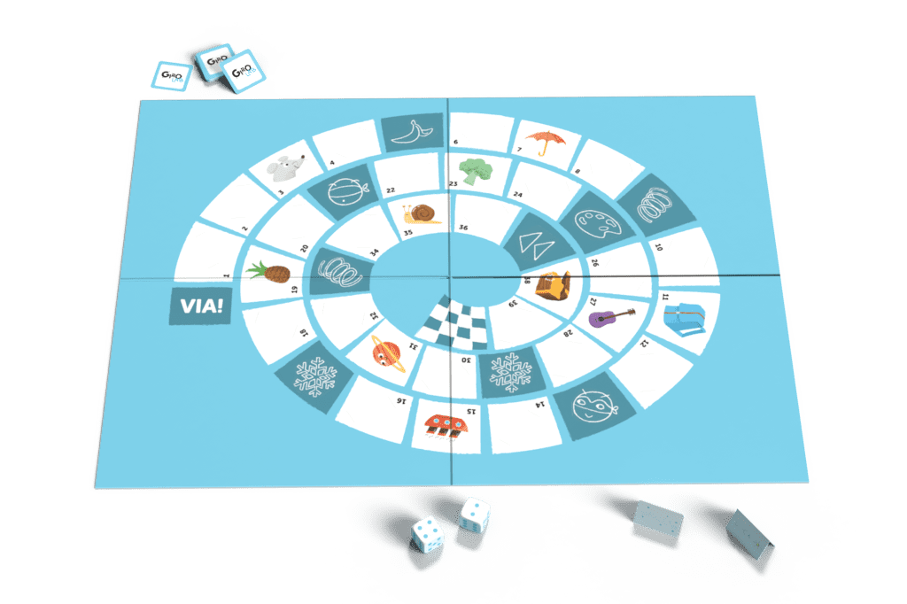

ParoLAB is a new way for kids to learn language skills based on reciprocity in the classroom. Aimed at elementary schools with foreign students who have a hard time dealing with the Italian language, the kit features classic board game mechanics to allow Italian and foreign students help each other learning the other’s native language. Kids can use the included erasable marker or any other tool they have to personalize and complete the kit and its elements, like playing cards, the dictionary, or even the box itself. Creativity is a great way to engage children: by including them in the game's preparation, they'll be able to play with the words and drawings they like and relate to more.

 

 

Date of realisation: 2020 - 2021
Software used: Indesign, Illustrator, Photoshop, 3Ds Max studio.
Project type: University - Milan Polytechnic, Visual Communication Design
(Synthesis Laboratory course).
Collaborators: Riccardo Rigamondi, Tancredi Pelà, Valentina Altrocchi.
Role: Design of visual identity, creation of illustrations, construction of analogue prototypes.